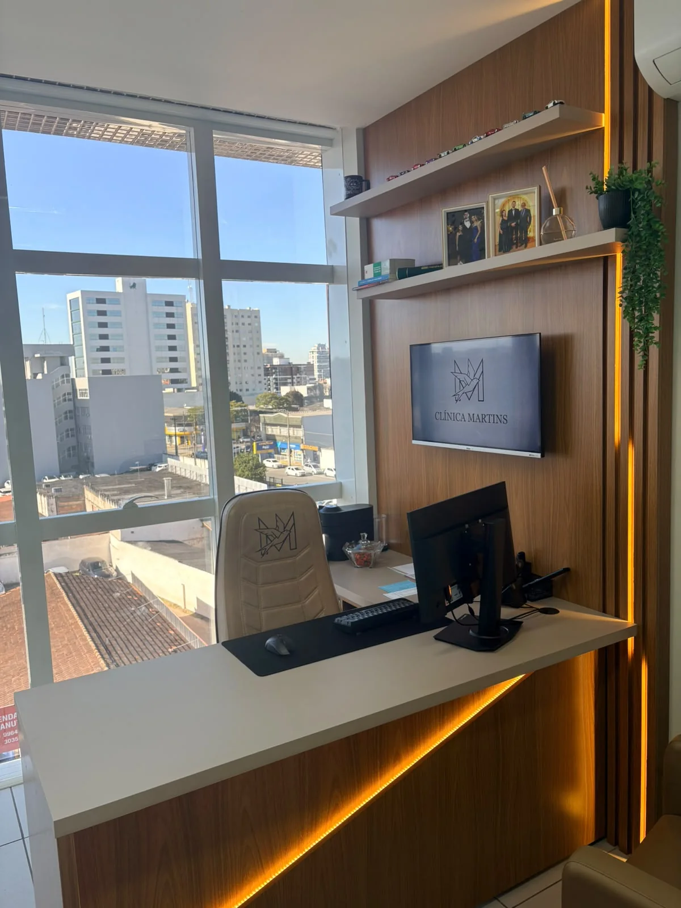
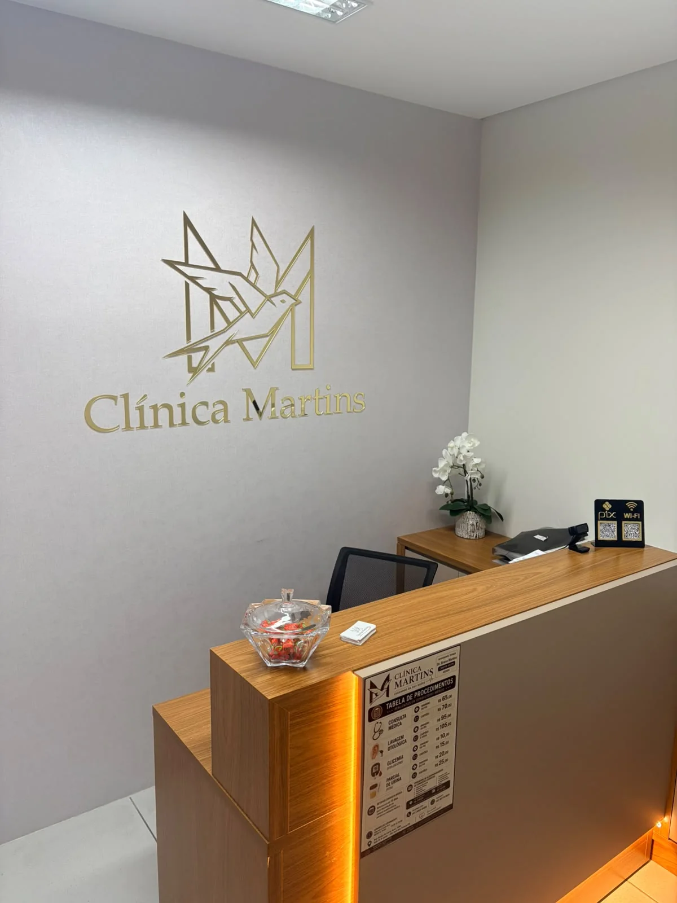
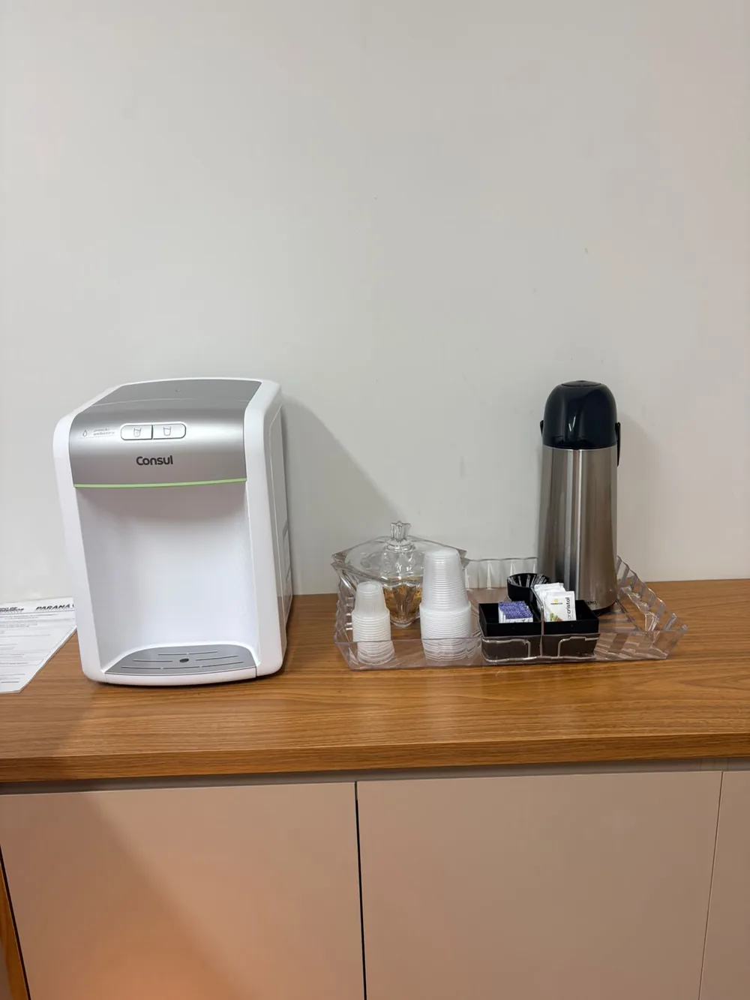
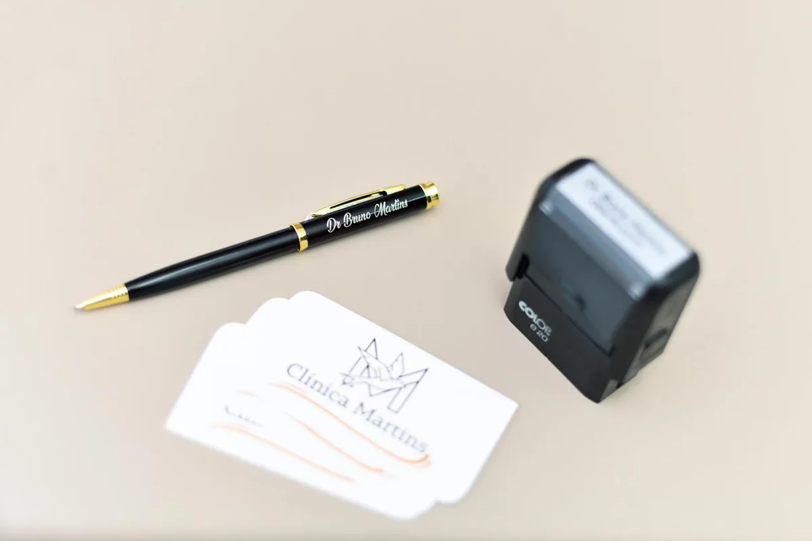

Cuidado médico com atenção, clareza e acolhimento.
Consulta médica clínica com escuta atenta, avaliação individualizada e explicações claras para que você compreenda cada etapa do seu cuidado.
Atendimento clínico com escuta e explicações claras.
Dr. Bruno Martins de Oliveira é médico formado pela Universidade Federal do Paraná e atua em atendimento clínico, avaliação de sintomas, acompanhamento de doenças crônicas e prevenção em saúde.
Na Clínica Martins, cada consulta é conduzida com atenção, respeito e linguagem acessível, valorizando a participação do paciente nas decisões sobre o próprio cuidado.
Cuidado clínico em diferentes necessidades.
Atendimentos e documentos médicos realizados conforme avaliação individual e indicação clínica.
Consulta médica clínica
Avaliação de sintomas, diagnóstico, tratamento e acompanhamento.
Agendar → 02Check-up e prevenção
Avaliação de riscos, exames e orientações preventivas.
Agendar → 03Lavagem de ouvido
Procedimento realizado após avaliação médica do conduto auditivo.
Agendar → 04Receitas e atestados
Emissão de documentos quando clinicamente indicados.
Agendar → 05Aptidão física
Avaliação para academia, esportes e atividades físicas.
Agendar → 06Teleconsulta
Consultas online com a mesma atenção e qualidade do atendimento presencial, para pacientes de todo o Brasil.
Agendar →Um ambiente preparado para receber você.




Confiança construída em cada atendimento.
Os sobrenomes foram omitidos para preservar a privacidade.
Atendimento também por parceiros de saúde.
Clínica Martins
Rua Barão do Cerro Azul, 1084
Sala 17 · 4º andar
Centro · São José dos Pinhais
Pagamento em dinheiro ou PIX.
Retorno em até 15 dias para a mesma queixa ou avaliação de exames solicitados pelo médico.